📅 Studieplanning
| Blok | Tijd | Onderdeel |
|---|---|---|
| 1 | 21u00 – 22u00 | Genocide (8 fases) + Casusstudie Holocaust |
| 2 | 22u00 – 23u00 | Koude Oorlog: Ontstaan + Vreedzame co-existentie/crisis |
| — | 23u00 | Slapen — slaap is cruciaal om dit vast te zetten in je geheugen |
| 3 | 07u00 – 08u00 | Koude Oorlog: Azië + Einde Koude Oorlog |
| 4 | 08u00 – 09u00 | Midden-Oosten: Israël-Palestina |
| 5 | 09u00 – 10u15 | Zelftest hieronder + hardop oefenen uitleggen |
| 6 | 10u15 – 11u15 | Tijdlijn + begrippen laatste keer scannen, rust |
🟥 DEEL 1 — Project Burgerschap: Massageweld en discriminatie
1.1 Draaiboek van een genocide
Genocide = volkenmoord; stelselmatige en opzettelijke uitroeiing van een etnische groep (of deel ervan). Stanton's 8 fases:
- Classificatie — verdeling in "wij" en "zij" (etnisch/religieus); op zich nog geen probleem.
- Symbolisering — groepen krijgen symbolen/uiterlijke kenmerken + stereotypen toegeschreven.
- Dehumanisering — andere groep ontmenselijkt (vergeleken met dieren/ongedierte) → drempel naar moord verlaagt.
- Organisering — staat/milities plannen de moorden (milities zodat staat niet rechtstreeks schuldig lijkt).
- Polarisatie — propaganda zet groepen tegen elkaar op, wetten verbieden contact, gematigden vervolgd.
- Voorbereiding — slachtoffers geïdentificeerd, dodenlijsten, symbolen verplicht, eigendom afgenomen, naar kampen gestuurd.
- Uitroeiing — de eigenlijke genocide; leger helpt mee als staat het organiseert.
- Ontkenning — bewijzen vernietigd, misdaden ontkend, slachtoffers beschuldigd.
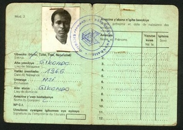
🎤 Mondeling oefenen: leg de 8 fases uit met de Holocaust als voorbeeld
Probeer dit hardop: "Eerst werden Joden geclassificeerd als apart van de Duitsers. Daarna kregen ze symbolen zoals de Jodenster. Vervolgens werden ze ontmenselijkt via propaganda van Goebbels... " — vertel zo de hele ketting tot aan de negationismewet door.
1.2 Casusstudie: De Holocaust
Antisemitisme en Jodenvervolging in Duitsland
- Jodenhaat (antisemitisme) bestond al eeuwen — Joden als "zondebok" (bv. schuld van de pest in de Middeleeuwen).
- Economische crisis jaren '20-'30 → Goebbels (propagandameester) legt schuld bij de Joden.
- Hitler: rassentheorie (Mein Kampf) — Arisch ras "superieur", Joods ras "onzuiver/gemengd".
- Neurenberg wetten (1935): Joden verliezen Duitse nationaliteit, verplichte Davidster, gemengde huwelijken verboden.
- Kristalnacht (9–10 november 1938): pogrom — synagogen/winkels/scholen vernield, Joden vermoord op straat.
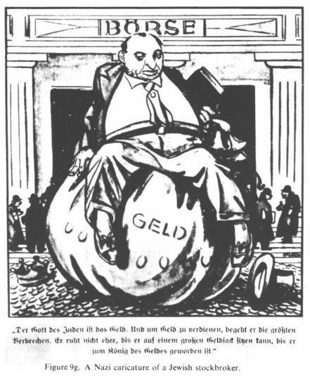
De Holocaust (uitvoering)
- Joden verzameld in getto's → gedeporteerd naar concentratiekampen.
- Einzatsgruppen: SS-groepen die hele dorpen uitmoordden in Oost-Europa = "Holocaust met de kogel".
- Wannseeconferentie (20 januari 1942): besluit tot industriële vernietiging van het Joodse ras.
- Vernietigingskampen in Polen (bekendst: Auschwitz-Birkenau) met gaskamers. Werkbekwamen gespaard; kinderen/gehandicapten direct naar gaskamers.
- Bevrijd door Sovjettroepen, januari 1945. ~6 miljoen Joden vermoord; ook homoseksuelen, communisten, Roma, gehandicapten.
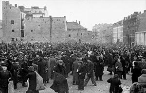
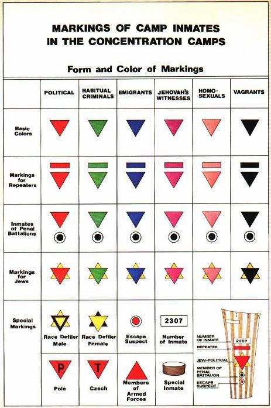
Na de Holocaust
- Neurenbergse processen (nov. 1945 – okt. 1946): nazi-leiders veroordeeld (dood/levenslang). Hitler & Goebbels pleegden zelfmoord.
- Adolf Eichmann (architect van de Holocaust) vluchtte naar Argentinië → gevangen door de Mossad in 1960.
- Jozef Mengele vluchtte ook naar Argentinië (experimenten op tweelingen/kinderen).
- Negationismewet (1995, België): ontkennen/goedkeuren/minimaliseren van nazidaden strafbaar.
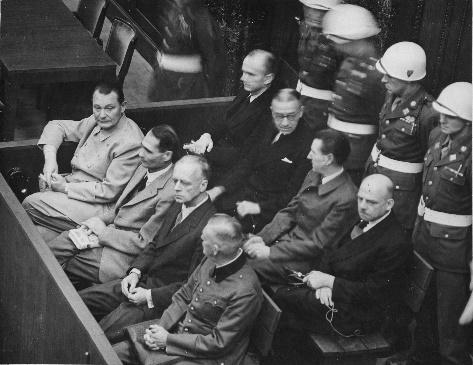
🎤 Mondeling oefenen: vertel het verhaal van de Holocaust in 1 minuut
Structuur: antisemitisme → Neurenberg wetten → Kristalnacht → getto's → concentratiekampen → Wannseeconferentie → vernietigingskampen → bevrijding → Neurenbergprocessen → ontkenning vandaag.
❄️ DEEL 2 — Hoofdstuk 5: De Koude Oorlog
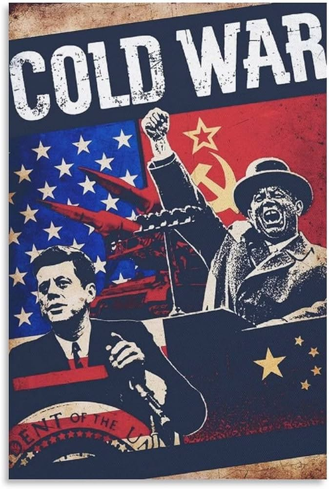
2.1 Studie 1: Het ontstaan van de Koude Oorlog
- Potsdam & Jalta (1945): verdeling Duitsland in 4 bezettingszones (ook Berlijn, in Sovjetzone).
- Oost-Europese landen worden satellietstaten van de USSR (Polen, Tsjechië, Hongarije) — beloofde verkiezingen kwamen er niet.
- Churchill (1946): spreekt van het IJzeren Gordijn — grens tussen kapitalistisch Westen en communistisch Oosten.
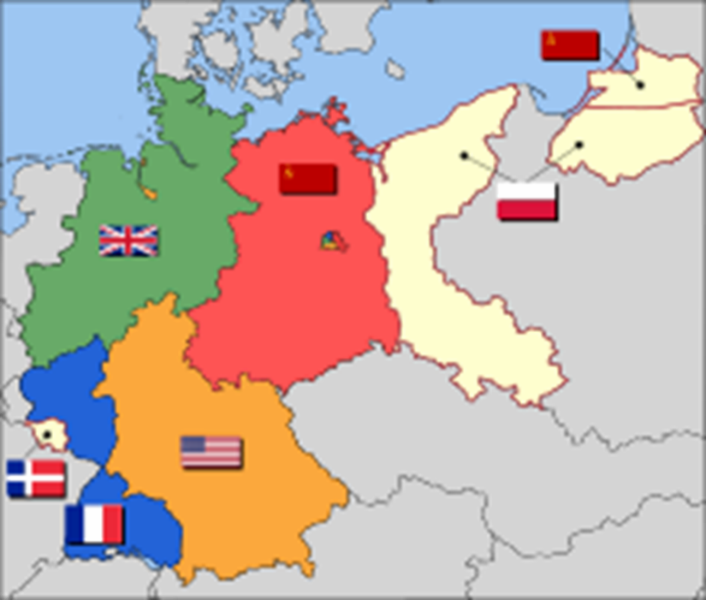
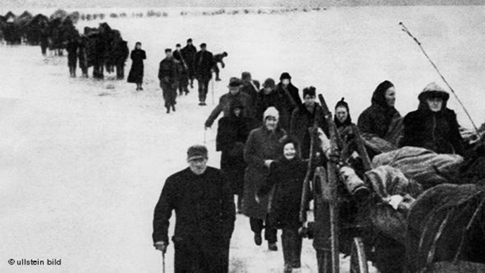
Politiek
- Trumandoctrine (1947): VS steunt elk land dat zich bedreigd voelt door communisme.
- NAVO (1949) — militair bondgenootschap van het Westen.
- Warschaupact (1955) — communistisch tegenbondgenootschap (reactie op NAVO-lidmaatschap West-Duitsland).
- 1949: Sovjet atoombom → einde Amerikaans militair overwicht → wapenwedloop.
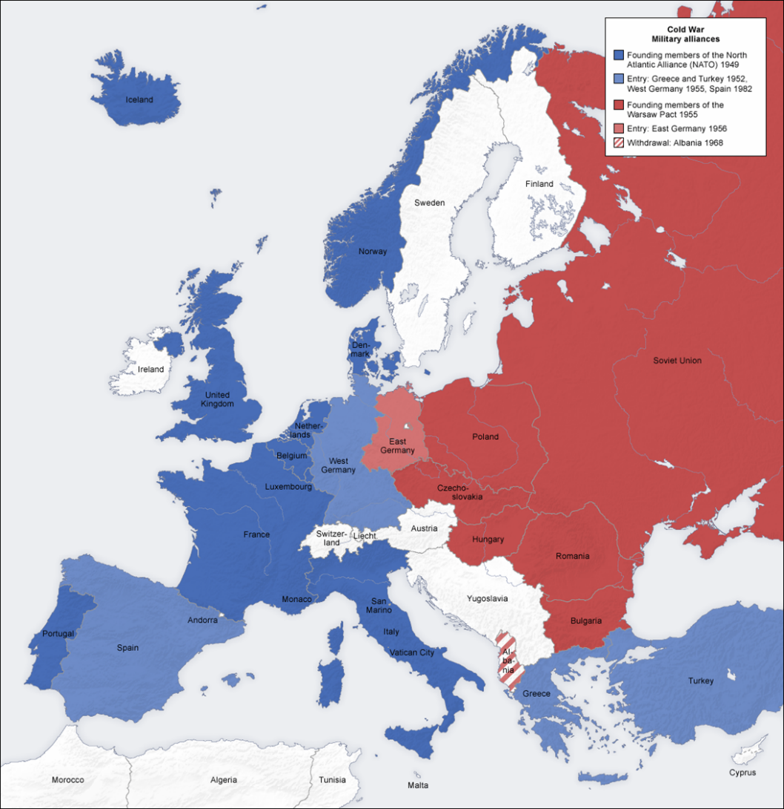
Economisch
- Marshallplan (1947): Amerikaanse steun voor wederopbouw Europa (geweigerd in Oostblok onder Sovjetdruk).
- COMECON (1949): Sovjet-tegenhanger; leden moesten planeconomie invoeren.
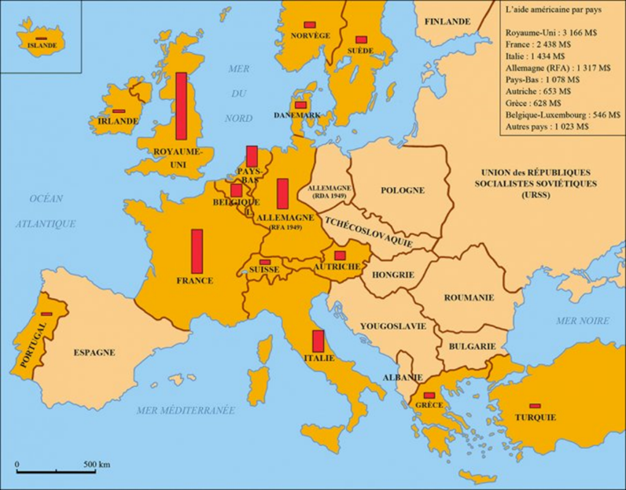
2.2 Studie 2: Vreedzame co-existentie en crisis
- 1953: Stalin sterft → Chroestsjov volgt op → beleid van vreedzame co-existentie (vredevol naast elkaar leven, invloedssferen respecteren).
- Hongaarse opstand (1956): hardhandig neergeslagen door Warschaupact; Westen grijpt niet in.
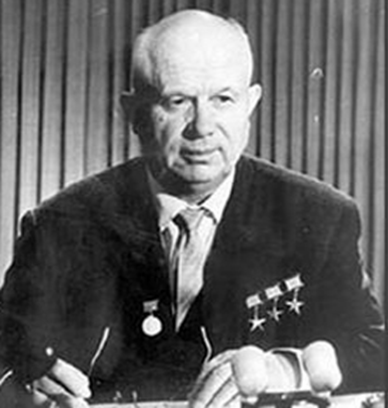
De Berlijnse muur
- 1948: Sovjet-blokkade West-Berlijn → Westerse luchtbrug (juni 1948 – mei 1949).
- 1949: BRD (West-Duitsland) en DDR (Oost-Duitsland) ontstaan.
- Massale brain drain (~3 miljoen) van Oost naar West via de open grens in Berlijn.
- 1961: muur gebouwd rond West-Berlijn om de brain drain te stoppen.
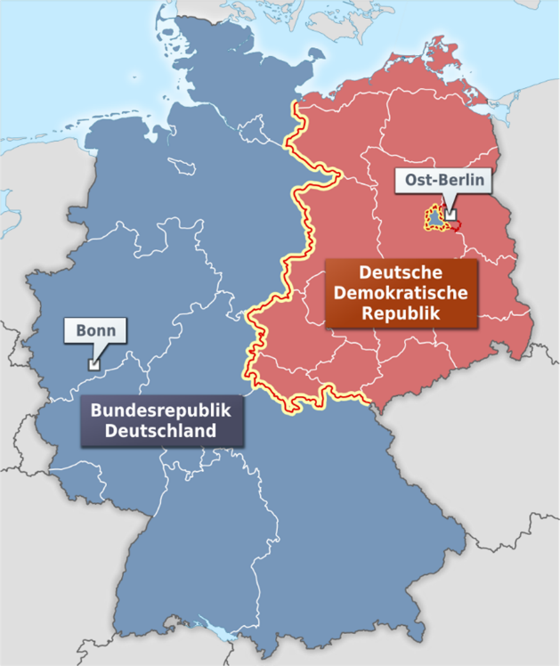
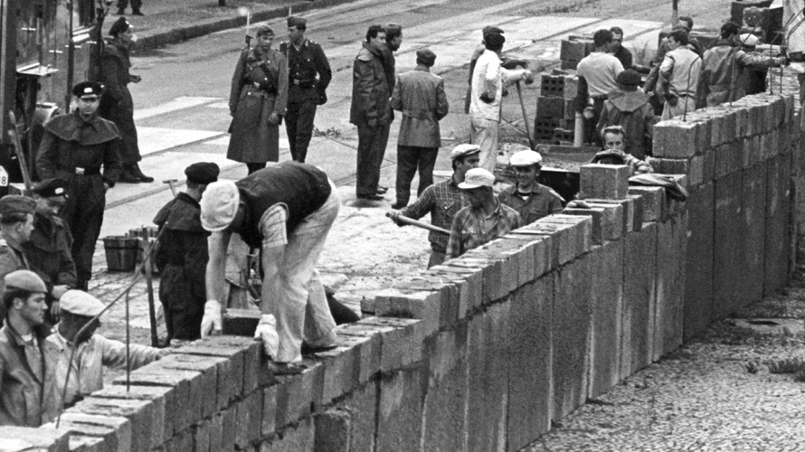
De Cubacrisis (1962)
- 1959: Castro neemt de macht in Cuba (communistisch).
- 1961: mislukte CIA-invasie (Varkensbaai).
- Augustus 1962: Sovjets plaatsen kernwapens op Cuba.
- Kennedy plaatst een quarantaine (zeeblokkade).
- MAD-doctrine (mutually assured destruction) voorkomt een echte oorlog.
- Oplossing: Sovjets halen raketten weg van Cuba; VS haalt in het geheim raketten weg uit Turkije.
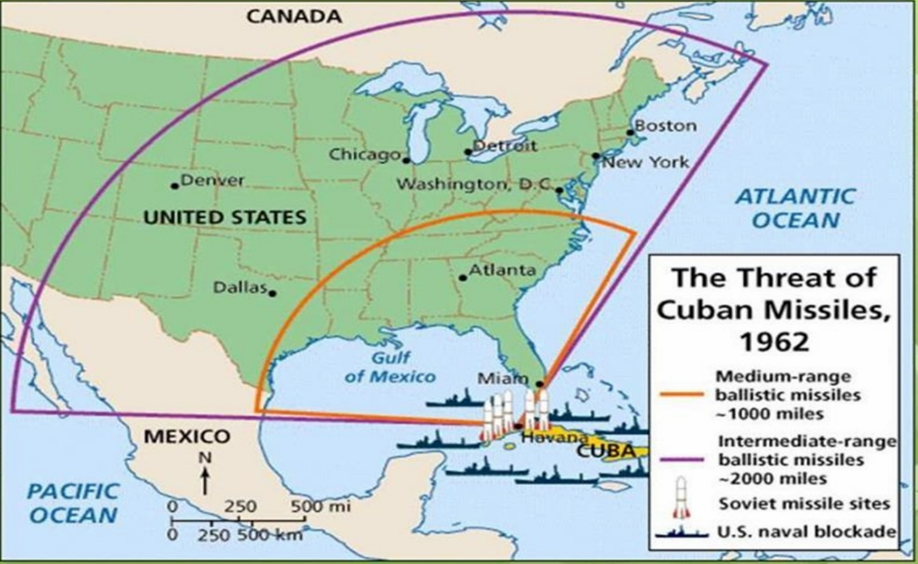
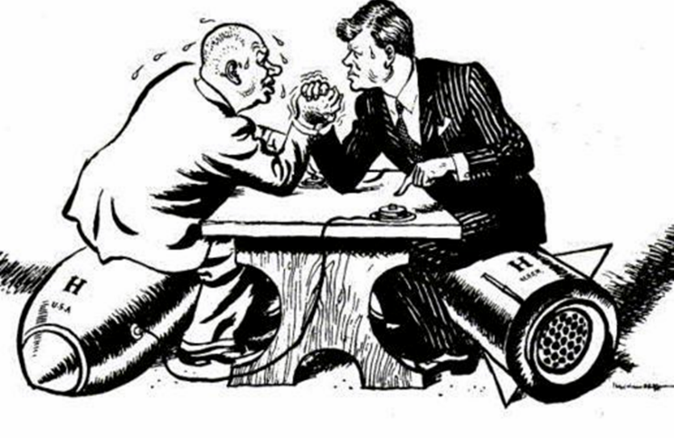
2.3 Studie 3: De Koude Oorlog in Azië
- 1949: China wordt communistisch (Mao Zedong wint van de nationalisten).
- VS-reactie: containmentpolitiek (verspreiding communisme actief tegengaan).
- Derde Wereld: landen (Afrika/Azië) die zich niet aansluiten bij een blok → Bandungconferentie (1955).
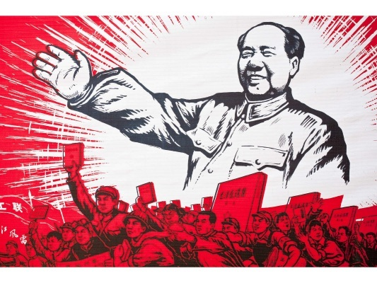
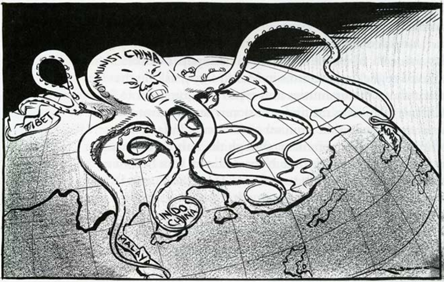
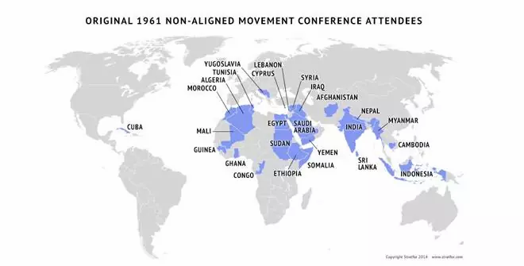
De Koreaoorlog
- Korea verdeeld op de 38ste breedtegraad (VS-zuiden / USSR-noorden).
- 1948: Zuid-Korea (Syngman Rhee) ↔ Noord-Korea (Kim Il Sung).
- Juni 1950: Noord-Korea valt het Zuiden binnen.
- VN-troepenmacht (onder VS) grijpt in; China steunt Noord-Korea.
- 1953: wapenstilstand (geen officiële vrede) → gedemilitariseerde zone. ~2 miljoen burgerslachtoffers.
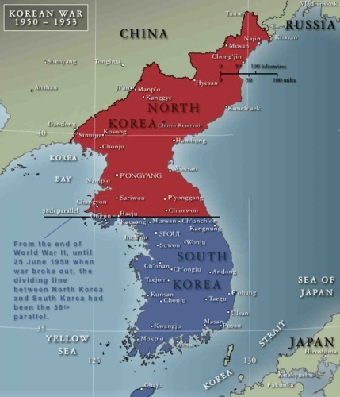
De Vietnamoorlog
- Akkoord van Genève: Vietnam gesplitst op de 17de breedtegraad; verkiezingen beloofd maar nooit gehouden.
- VS installeert Ngo Dinh Diem in het Zuiden — vanuit de dominotheorie (als Vietnam communistisch valt, valt heel Azië).
- Oorlog vanaf 1957; VS grijpt militair in vanaf 1964 na het Golf van Tonkin-incident (deels verzonnen aanval).
- Vietcong: guerrillaoorlog tegen de VS.
- VS gebruikt Agent Orange (ontbladering) en Napalm (brandbommen).
- Tet-offensief (1968): keerpunt — Amerikaans publiek keert zich tegen de oorlog.
- VS trekt zich terug, Noord-Vietnam verovert het land.
- Perspectiefverschil: VS zag het als Koude Oorlog-conflict; Vietnamezen zagen het als onafhankelijkheidsoorlog (na Frankrijk en Japan).
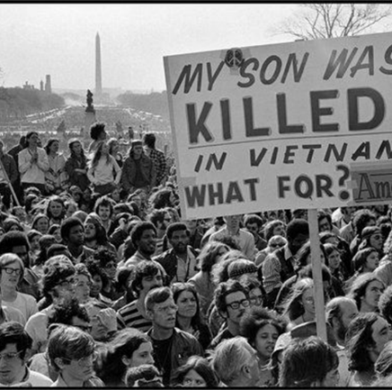
2.4 Studie 4: Détente, confrontatie en het einde van de Koude Oorlog
Détente (1962–1979)
- Non-proliferatieverdrag (1968): beperkt kernwapenbezit (5 erkende kernmachten: VS, USSR, China, Frankrijk, VK).
- SALT I (1972): afspraken over langeafstandsraketten.
- Space race: Sputnik (1957, USSR), Gagarin (1961, USSR), Armstrong op de maan (1969, VS).
- Praagse Lente (1968): Tsjechoslowakije wil "socialisme met menselijk gezicht" → neergeslagen door Brezjnev.
- Brezjnev-doctrine: USSR mag ingrijpen als satellietstaat te ver van het communisme afdrijft.
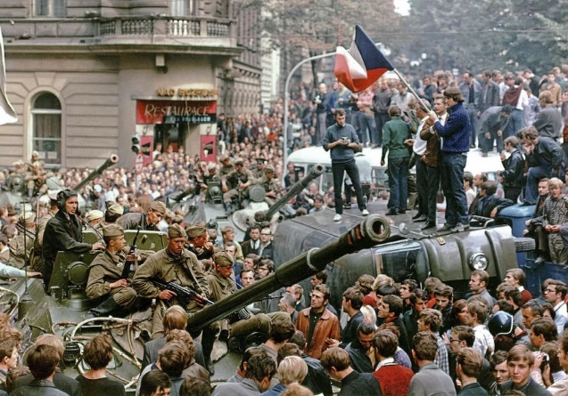
Confrontatie (1979–1985)
- NAVO dubbelbesluit (1979): kernraketten plaatsen én ontwapening bespreken.
- Sovjetinvasie Afghanistan: steun aan communistisch regime tegen Mujahedeen (gesteund door VS) — "Vietnam van de Sovjet-Unie".
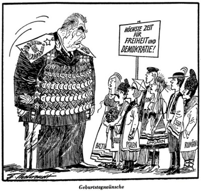
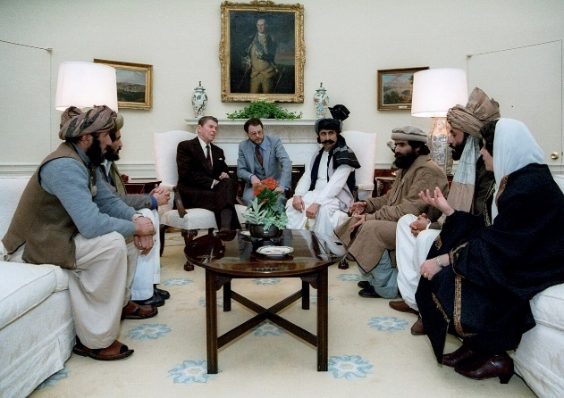
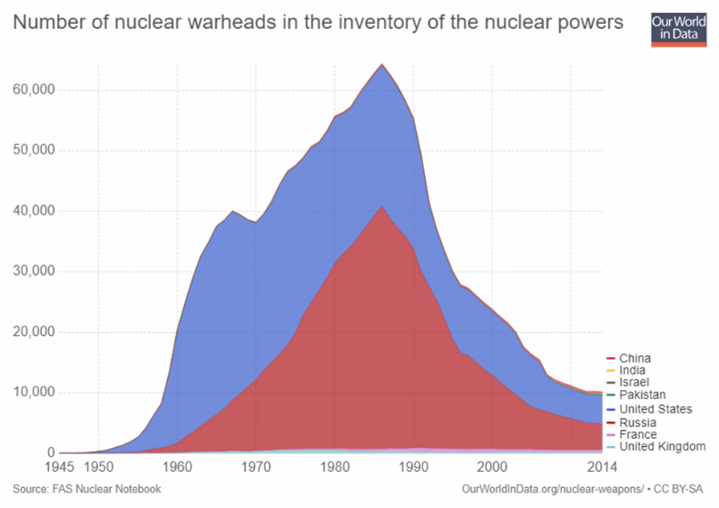
Einde Koude Oorlog (1985–1991)
- 1985: Gorbatsjov aan de macht → glasnost (openheid) + perestrojka (hervorming).
- Brezjnev-doctrine verworpen → satellietstaten krijgen meer vrijheid.
- Hongarije opent grens met Oostenrijk (zomer 1989) → Oost-Duitsers vluchten.
- 9 november 1989: Val van de Berlijnse Muur. Duitsland herenigd in 1990.
- 1989: vrije verkiezingen USSR; Boris Jeltsin (liberaal) verkozen.
- 1991: Sovjet-Unie officieel ontbonden.
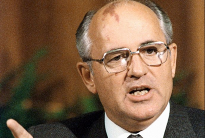
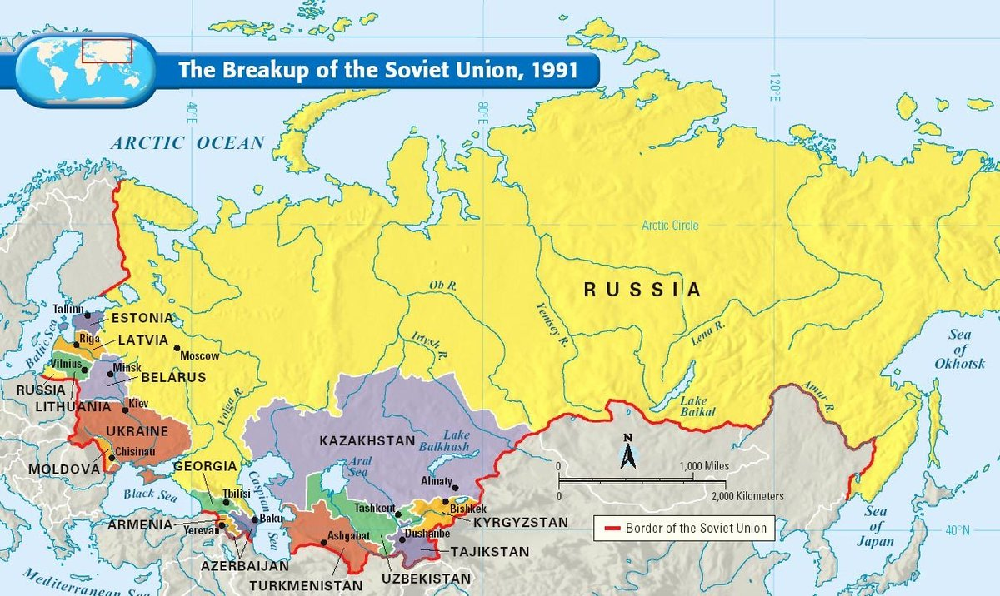
🎤 Mondeling oefenen: vertel de Koude Oorlog als één doorlopend verhaal
Ontstaan (Jalta → IJzeren Gordijn → NAVO/Marshall) → Vreedzame co-existentie (Chroestsjov → muur → Cuba) → Azië (containment → Korea → Vietnam) → Détente (ontwapening → space race) → Confrontatie (Afghanistan) → Einde (Gorbatsjov → muur valt → USSR uiteen). Vertel dit hardop zonder te spieken.
🕊️ DEEL 3 — Problemen in het Midden-Oosten: het Israëlisch-Palestijns conflict
Het ontstaan van de staat Israël
- Joodse Diaspora: verspreiding van de Joden over de wereld sinds de 6de eeuw v.C.
- Eind 19de eeuw: vervolgingen in Oost-Europa → zionisme (beweging voor een eigen Joodse staat in Palestina).
- Balfour-declaratie (1917): Britten beloven zionisten een plek in Palestina.
- Na de Holocaust: massale Joodse migratie naar Palestina.
- 1947: VN-verdeelplan — Joodse + Arabische staat, Jeruzalem onder VN-controle. Joden akkoord, Arabieren niet.
- Nakba ("catastrofe"): 750.000 Palestijnen vluchten naar buurlanden/Gazastrook/Westelijke Jordaanoever.
- 14 mei 1948: staat Israël uitgeroepen. Arabische buurlanden vallen binnen.
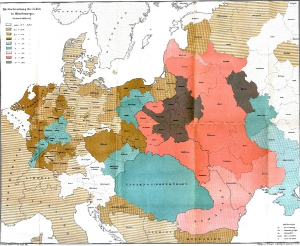
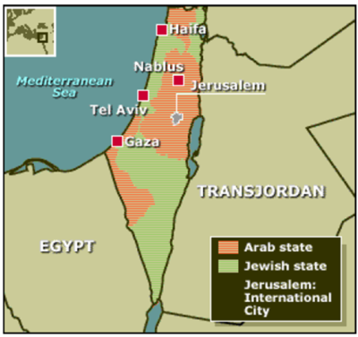
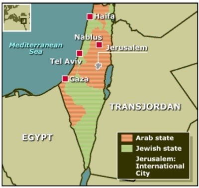
Conflicten met de buurlanden
- 1956: Suezcrisis — Egypte nationaliseert het Suezkanaal → Frankrijk/VK/Israël vallen aan, trekken zich terug onder internationale druk.
- Zesdaagse Oorlog (juni 1967): Israël verovert Jeruzalem, Westelijke Jordaanoever, Gaza, Golanhoogten.
- Yom Kippur-oorlog (1973): Egypte/Syrië verrassingsaanval op een Joodse feestdag; Israël slaat terug.
- Camp David-akkoorden (1979): Israël trekt zich terug uit Sinaï; belofte van Palestijns zelfbestuur (niet nageleefd — meer nederzettingen gebouwd).
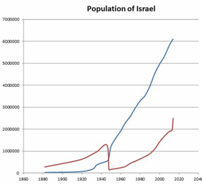
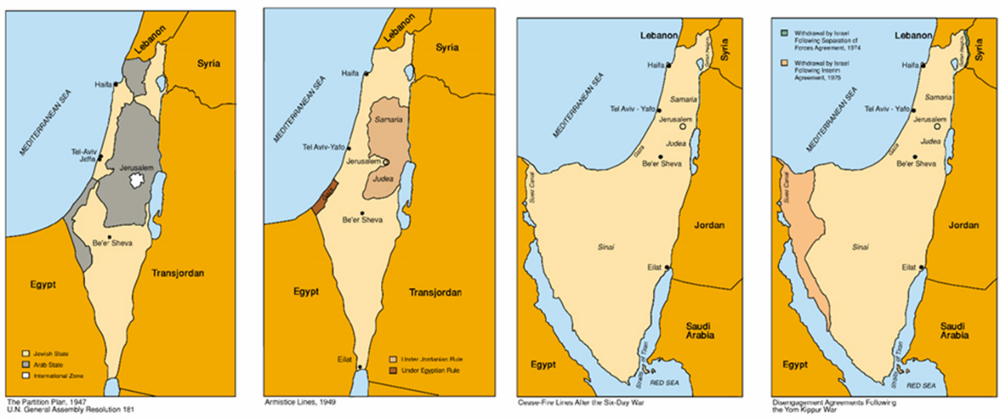
Israëlisch-Palestijnse conflicten
- Kolonisten: Israëli's die nederzettingen bouwen in bezet gebied.
- Eerste Intifada (1987): aanvankelijk geweldloos verzet (boycots, burgerlijke ongehoorzaamheid) → hardhandig neergeslagen.
- Oslo-Vredesakkoorden (1993): belofte van Israëlische terugtrekking + Palestijnse staat → mislukt door nederzettingen + aanslagen van Hamas.
- Tweede Intifada (2000): terreuraanslagen Hamas, extreem gewelddadige Israëlische respons, muren/grenzen.
- Verkiezingen Palestina (2006): Hamas wint van Fatah → breuk: Hamas in Gaza, Fatah op Westelijke Jordaanoever.
- 7 oktober-aanslag Hamas → grootschalige Israëlische militaire reactie in Gaza (vergelijking met genocide).
- Voorgestelde oplossing: tweestatenoplossing (onafhankelijke Joodse + Palestijnse staat).
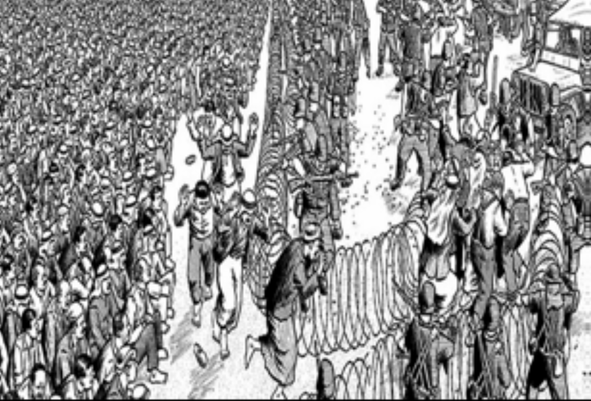
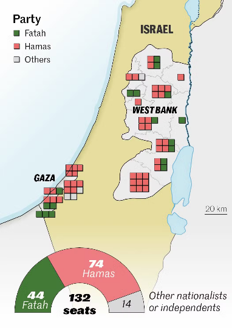
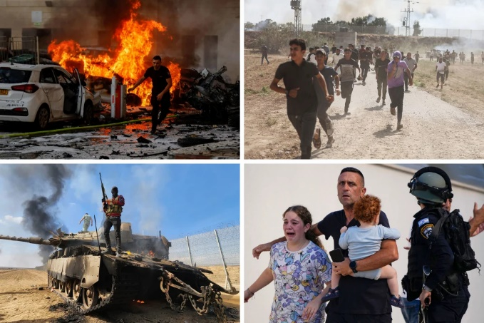
🎤 Mondeling oefenen: vertel het conflict van 1917 tot vandaag
Zionisme → Balfour → migratie na Holocaust → VN-verdeelplan → Nakba → staat Israël → oorlogen met buurlanden → bezette gebieden → Intifada's → Oslo (mislukt) → Hamas vs Fatah → 7 oktober → tweestatenoplossing als voorstel.
🕐 Volledige Tijdlijn (chronologisch)
- 1917 — Balfour-declaratie
- 1935 — Neurenberg wetten
- 1938 (9–10 nov) — Kristalnacht
- 1942 (20 jan) — Wannseeconferentie
- 1945 — Bevrijding kampen / Potsdam & Jalta / einde WOII
- 1945–1946 — Neurenbergse processen
- 1946 — Churchill: IJzeren Gordijn
- 1947 — Trumandoctrine / Marshallplan / VN-verdeelplan Palestina
- 1948 — Berlijnse blokkade begint / staat Israël uitgeroepen (14 mei) / Nakba
- 1949 — NAVO opgericht / BRD & DDR ontstaan / Sovjet atoombom / COMECON / China communistisch
- 1950–1953 — Koreaoorlog
- 1953 — Stalin sterft, Chroestsjov komt aan de macht
- 1955 — Warschaupact / Bandungconferentie
- 1956 — Hongaarse opstand / Suezcrisis
- 1957 — Vietnamoorlog begint / Sputnik
- 1960 — Eichmann gevangen
- 1961 — Gagarin in de ruimte / Varkensbaai-invasie / bouw Berlijnse muur
- 1962 — Cubacrisis
- 1964 — Golf van Tonkin-incident, VS grijpt militair in in Vietnam
- 1967 (juni) — Zesdaagse Oorlog
- 1968 — Praagse Lente / Non-proliferatieverdrag / Tet-offensief
- 1969 — Armstrong op de maan
- 1972 — SALT I
- 1973 — Yom Kippur-oorlog
- 1975 — Einde Vietnamoorlog
- 1979 — Camp David-akkoorden / NAVO dubbelbesluit / Sovjetinvasie Afghanistan
- 1985 — Gorbatsjov aan de macht (glasnost & perestrojka)
- 1987 — Eerste Intifada
- 1989 (9 nov) — Val van de Berlijnse Muur
- 1990 — Duitse hereniging
- 1991 — Sovjet-Unie ontbonden
- 1993 — Oslo-Vredesakkoorden
- 1995 — Negationismewet (België)
- 2000 — Tweede Intifada
- 2006 — Verkiezingen Palestina (Hamas wint)
- 7 oktober — Hamas-aanslag → Israëlische respons in Gaza
📖 Volledige Begrippenlijst
| Begrip | Betekenis |
|---|---|
| Genocide | Stelselmatige uitroeiing van een etnische groep |
| Antisemitisme | Jodenhaat |
| Pogrom | Aanval van een menigte op een bevolkingsgroep met toestemming van de staat |
| Getto | Afgesloten wijk waar Joden verplicht moesten wonen |
| Concentratiekamp | Kamp waar mensen onder dwang bijeengebracht worden |
| Vernietigingskamp | Kamp specifiek bedoeld om mensen te vermoorden |
| Negationisme | Ontkennen van (bv. Holocaust-)misdaden |
| Bipolaire wereld | Wereld geregeerd door twee grote machtsblokken |
| Satellietstaat | Officieel onafhankelijk, in realiteit onder controle van een ander land |
| IJzeren Gordijn | Grens tussen West- en Oostblok |
| Containmentpolitiek | VS-politiek om verspreiding communisme te stoppen |
| Dominotheorie | Idee dat één communistisch land de hele regio "omvalt" |
| Guerrillaoorlog | Snelle aanvallen + terugtrekken, vaak in de jungle |
| Derde Wereld | Landen niet aangesloten bij het Oost- of Westblok |
| Vreedzame co-existentie | Vredevol naast elkaar leven, invloedssfeer respecteren |
| Brain drain | Massaal verlies van hooggeschoolden door migratie |
| MAD-doctrine | Kernoorlog leidt tot vernietiging van beide kanten → voorkomt oorlog |
| Détente | Periode van ontspanning tussen Oost en West |
| Brezjnev-doctrine | USSR mag ingrijpen bij te veel vrijheid in een satellietstaat |
| Space race | Ruimtewedloop tussen VS en USSR |
| Glasnost | Openheid, minder censuur (Gorbatsjov) |
| Perestrojka | Politieke/economische hervorming (Gorbatsjov) |
| Zionisme | Beweging voor een eigen Joodse staat |
| Joodse Diaspora | Verspreiding van de Joden over de wereld |
| Balfour-declaratie | Britse belofte van een plek in Palestina aan zionisten |
| Nakba | "Catastrofe" — vlucht/verdrijving van 750.000 Palestijnen (1948) |
| Kolonist | Israëli die zich vestigt in bezet gebied |
| Intifada | Palestijns verzet tegen Israël |
| Tweestatenoplossing | Onafhankelijke Joodse + Palestijnse staat naast elkaar |
❓ Zelftest — Multiplechoice
Lees de vraag, zeg het antwoord luidop, controleer dan met de antwoordensleutel achteraan dit document.
1. Wat is de JUISTE volgorde van de eerste 3 fases van een genocide volgens Stanton?
- a) Classificatie → Symbolisering → Dehumanisering
- b) Symbolisering → Classificatie → Organisering
- c) Dehumanisering → Classificatie → Polarisatie
- d) Organisering → Symbolisering → Classificatie
2. Wat hield de Wannseeconferentie (20 januari 1942) in?
- a) De ondertekening van de wapenstilstand met Japan
- b) Het besluit om de Joden industrieel te vernietigen in vernietigingskampen
- c) De oprichting van de NAVO
- d) Het begin van de Kristalnacht
3. Wie was de architect van de Holocaust die naar Argentinië vluchtte en in 1960 door de Mossad gevangen werd?
- a) Jozef Mengele
- b) Joseph Goebbels
- c) Adolf Eichmann
- d) Heinrich Himmler
4. Wat is het verschil tussen 'classificatie' en 'dehumanisering' in het genocideproces?
- a) Er is geen verschil, het zijn synoniemen
- b) Classificatie is enkel het indelen in groepen; dehumanisering ontkent de menselijkheid van de andere groep
- c) Dehumanisering komt altijd vóór classificatie
- d) Classificatie gebeurt enkel door de staat, dehumanisering enkel door burgers
5. Waarom werd in 1995 de negationismewet ingevoerd in België?
- a) Om Holocaust-ontkenning, goedkeuring of minimalisering strafbaar te maken
- b) Om de bouw van nieuwe concentratiekampen te verbieden
- c) Om Duitse herstelbetalingen te regelen
- d) Om de Neurenbergprocessen te heropenen
6. Wat verklaart het IJzeren Gordijn volgens Churchill (1946)?
- a) Een fysieke muur tussen Oost- en West-Berlijn
- b) De grens tussen het kapitalistische Westen en het communistische Oosten
- c) Een handelsverdrag tussen de VS en de USSR
- d) De grens tussen Noord- en Zuid-Korea
7. Wat was het DOEL van de Trumandoctrine (1947)?
- a) Europa economisch herstellen na de oorlog
- b) Landen steunen die zich bedreigd voelen door communisme, om verspreiding te stoppen
- c) Een vredesakkoord sluiten met de Sovjet-Unie
- d) De Verenigde Naties oprichten
8. Waarom werd het Warschaupact in 1955 opgericht?
- a) Als reactie op de toetreding van West-Duitsland tot de NAVO
- b) Als reactie op de Cubacrisis
- c) Om het Marshallplan te financieren
- d) Om de Praagse Lente neer te slaan
9. Wat was het gevolg van de Sovjet atoombom in 1949?
- a) Het einde van de Koude Oorlog
- b) Het Amerikaanse militaire overwicht verdween en er ontstond een wapenwedloop
- c) De NAVO werd ontbonden
- d) Cuba werd communistisch
10. Waarom weigerden Oost-Europese landen het Marshallplan?
- a) Ze hadden geen oorlogsschade
- b) Onder druk van de Sovjet-Unie
- c) Omdat het te weinig geld was
- d) Omdat de VS het hen verbood
11. Wat betekent 'vreedzame co-existentie' zoals Chroestsjov het toepaste?
- a) Volledige eenwording van Oost en West
- b) Vredevol naast elkaar leven en elkaars invloedssfeer respecteren
- c) Een militaire alliantie tussen VS en USSR
- d) Het afschaffen van alle kernwapens
12. Waarom werd de Berlijnse muur in 1961 gebouwd?
- a) Om een NAVO-aanval te voorkomen
- b) Om de brain drain (vlucht van hooggeschoolden) naar het Westen te stoppen
- c) Om de Cubacrisis op te lossen
- d) Om Duitsland te herenigen
13. Wat deed de MAD-doctrine tijdens de Cubacrisis?
- a) Ze zorgde ervoor dat de VS Cuba binnenviel
- b) Ze maakte een kernoorlog in de praktijk onmogelijk omdat beide kanten vernietigd zouden worden
- c) Ze leidde tot de bouw van de Berlijnse muur
- d) Ze was een wapenverdrag tussen Frankrijk en China
14. Wat was de 'dominotheorie' die de VS gebruikte om in Vietnam in te grijpen?
- a) Het idee dat als Vietnam communistisch werd, heel Azië zou volgen
- b) Het idee dat Vietnam een dominostuk was in een spel tussen Frankrijk en Japan
- c) Een economische theorie over handelstekorten
- d) Een militaire strategie van de Vietcong
15. Wat was het keerpunt in de Vietnamoorlog dat het Amerikaanse publiek tegen de oorlog deed keren?
- a) De Varkensbaai-invasie
- b) Het Tet-offensief (1968)
- c) De Cubacrisis
- d) De Praagse Lente
16. Waarom zagen de Vietnamezen de oorlog anders dan de Amerikanen?
- a) Ze zagen het als een onafhankelijkheidsoorlog, niet enkel als een Koude Oorlog-conflict
- b) Ze waren onverschillig over het resultaat
- c) Ze vochten enkel voor economische redenen
- d) Ze beschouwden het als een religieuze oorlog
17. Wat hield de Brezjnev-doctrine in?
- a) De Sovjet-Unie mag ingrijpen als een satellietstaat te ver van het communisme afdrijft
- b) De VS mag overal op de wereld ingrijpen tegen communisme
- c) Kernwapens worden verboden in Europa
- d) Satellietstaten krijgen volledige onafhankelijkheid
18. Wat betekenden glasnost en perestrojka onder Gorbatsjov?
- a) Glasnost = meer kernwapens, perestrojka = minder kernwapens
- b) Glasnost = openheid/minder censuur, perestrojka = politieke en economische hervorming
- c) Beide betekenen hetzelfde: bezuinigingen
- d) Glasnost = oorlog, perestrojka = vrede
19. Wat gebeurde er op 9 november 1989?
- a) De Cubacrisis begon
- b) De Sovjet-Unie viel uiteen
- c) De Val van de Berlijnse Muur
- d) De Praagse Lente brak uit
20. Wat was de Nakba voor de Palestijnen?
- a) De stichting van de staat Israël als positieve gebeurtenis
- b) De 'catastrofe': vlucht/verdrijving van 750.000 Palestijnen in 1948
- c) Een vredesverdrag met Egypte
- d) De bouw van de Israëlische muur
21. Wat beloofde de Balfour-declaratie (1917)?
- a) Onafhankelijkheid voor Egypte
- b) Een Britse mandaat over heel het Midden-Oosten
- c) Dat zionisten een plek kregen in Palestina
- d) Het einde van de Ottomaanse overheersing
22. Wat was het gevolg van de Zesdaagse Oorlog (1967) voor Israël?
- a) Israël verloor de Sinaïwoestijn
- b) Israël veroverde Jeruzalem, de Westelijke Jordaanoever, Gaza en de Golanhoogten
- c) Israël trok zich volledig terug uit Palestina
- d) Egypte nationaliseerde het Suezkanaal
23. Waarom mislukten de Oslo-Vredesakkoorden (1993)?
- a) Omdat de VN ze nooit goedkeurde
- b) Door voortgaande nederzettingenbouw en aanslagen van Hamas
- c) Omdat Israël zich volledig terugtrok
- d) Omdat Egypte de akkoorden weigerde te tekenen
24. Wat is de 'tweestatenoplossing'?
- a) Eén staat met twee regeringen
- b) Een onafhankelijke Joodse staat en een onafhankelijke Palestijnse staat naast elkaar
- c) Het herverdelen van Jeruzalem onder drie religies
- d) Een federatie tussen Israël en Egypte
25. Wat is het verschil tussen de Eerste en Tweede Intifada?
- a) De Eerste was vooral geweldloos (boycots/burgerlijke ongehoorzaamheid), de Tweede veel gewelddadiger met terreuraanslagen
- b) Ze zijn identiek, enkel het jaartal verschilt
- c) De Eerste was in Gaza, de Tweede enkel in Jeruzalem
- d) De Tweede Intifada werd door Israël georganiseerd
✅ Snelle checklist voor morgen
🔑 Antwoordensleutel zelftest
1. a 2. b 3. c 4. b 5. a 6. b 7. b 8. a 9. b 10. b 11. b 12. b 13. b 14. a 15. b 16. a 17. a 18. b 19. c 20. b 21. c 22. b 23. b 24. b 25. a